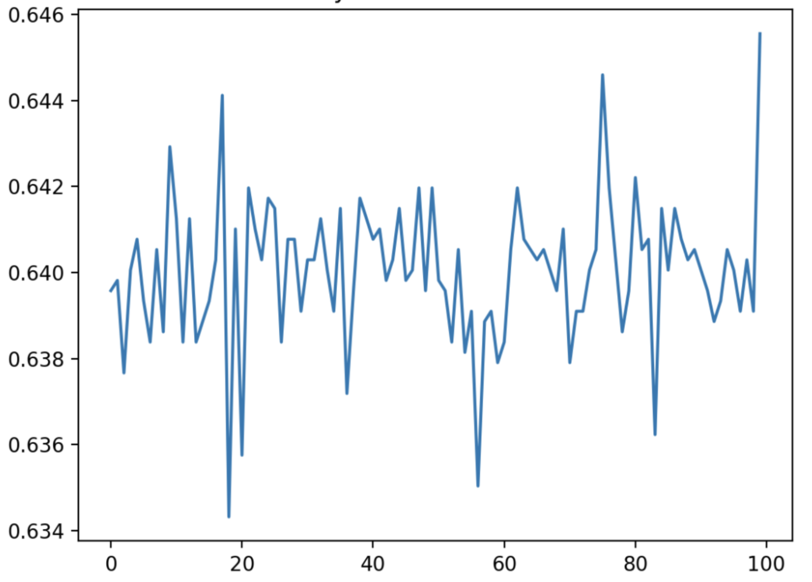
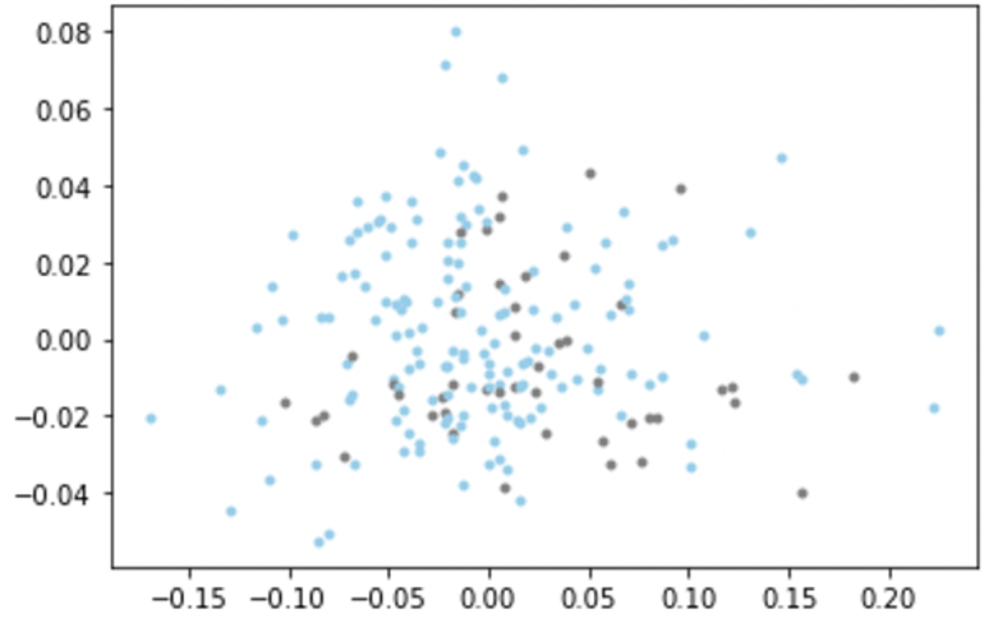
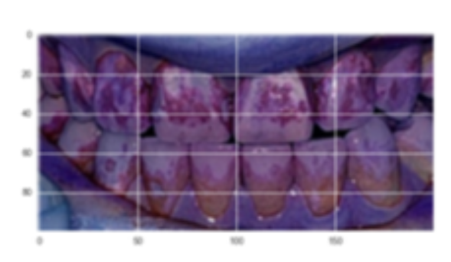

Seong Woo Han
I'm a senior math student at Courant Institute of Mathematical Sciences, New York University. I'm broadly interested in mathematical modeling, probabilistic inference, and machine learning applications in bioscience and healthcare. I am looking to explore understanding fariness and biases in machine learning and methods that improve the accuracy of models on minorities.

Research

|
Under the guidance of Professor Charles Peskin, my senior thesis is to design a mathematical model of proposed surgical treatments on Refractory Pulmonary Hypertension with Texas Children’s Hospital dataset. |
|  |
This paper aims to extract crucial information that predicts the rate of readmission of patients in 30 days based on the Multiparameter Intelligent Monitoring in Intensive Care (MIMIC-III) dataset, using the Deep Knockoffs Model. |
|  |
This paper aims to develop a model built from features computed from a digitized image of a fine needle aspirate of a breast mass that predicts whether a given tumor sample is benign or malignant and redict whether the tumor is recurrent or not based on relevant features like time elapsed and other cell nuclei properties. |
|  |
This work quantifies the level of plaque in one’s mouth to allow for an accessible and automatic dental diagnostic by using average RGB/HSL values of pixels and indicate each picture of score of 0-5, 0 being the lowest and 5 being the highest. |